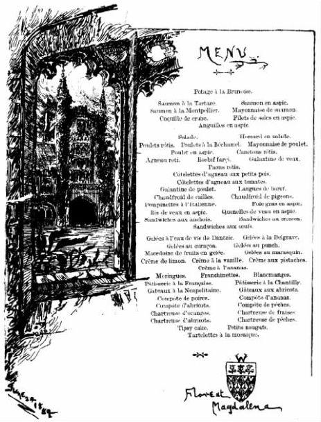
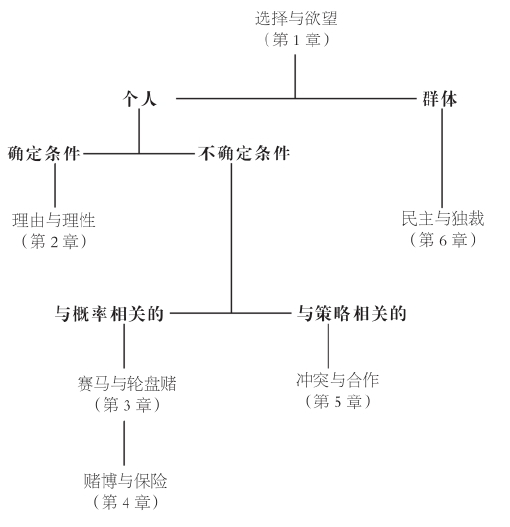

这是电影《猜火车》开头的画外音。但这个叫瑞顿的小伙子，他的选择是否合理？他选择“其他事”，而不是“人生”，这是他自己的想法：尽管我和你可能不会这样选，这样的选择本身并不是非理性的。正如人们所说，爱好不容争辩 [1] 。但瑞顿号称这样选择没有理由却是另一回事。正如语言所暗示，并且我们将要看到的，在理由和理性之间存在紧密联系。事实上，瑞顿自己也很快给出了一个理由：
瑞顿的想法很实际，他又继续说道：
图1《赫拉克勒斯的选择》：美德VS恶行（保罗·德·马泰斯，1712）
所有的选择，正如瑞顿的选择一样，源自于内心和大脑。内心提供激情，大脑则给出理由。那些基于细致入微的推理却缺乏欲望的选择是空洞的。但只有激情、没有理由的选择则难以付诸实施：它只适合于某个气急败坏的孩子，既想回家，又不想回家。
亚里士多德（前384—前322）是选择理论，同时也是逻辑学本身的创始人。他指出了选择、理由和欲望之间存在的联系：“……选择的根源在于欲望以及对结果有所预见的推理——这就是为什么选择不可能脱离……理由而单独存在”；或者，更简要地说，“选择就是深思熟虑的欲望”。苏格兰启蒙运动的领袖大卫·休谟（1711—1776）说过这样的名言：“理性是并且只应该是激情的奴隶。”激情本身，即使是瑞顿那样的激情，既不是合理的，也不是不合理的：“在任何情况下，激情都不能被称做不合理。”因此，“宁愿世界毁灭也不愿划破手指，这种做法并不违背理性；为了让一个印第安人免受些许不快而选择自己倾家荡产，这对我来说同样不违背理性”。
合理性是选择模式而不是单个选择本身的属性。想回家这件事本身没有任何不合理之处，但既想回家，又不想回家，这当中就有问题。瑞顿选择海洛因这件事本身没有任何不合理之处，但如果他同时又选择要避免可能出现的痛苦、绝望和死亡，他的选择就会显得很古怪。因此，要探究理性究竟意味着什么，我们必须关注选择模式。我们必须关注当候选菜单发生变化的时候，选择随之变化的方式。由候选菜单和选择所构成的这一框架需要一些解释。
我所说的候选菜单，指的是必须从中作出选择的一系列候选项。（类似“候选菜单”之类的专业用语，首次出现时用斜体 [3] 表示，并且在书末的术语表中附有解释。）但与餐馆的菜单不同，我们所谈论的候选菜单，其中必须有某个选项成为我们的选择。一个简单的餐馆菜单可能是这样的：
三明治
鳄梨三明治
熏肉三明治
这样的菜单允许饱的人什么都不选，也允许饿的人同时选择两项。与之对应，我们所说的候选菜单应该是这样的：
选项
什么都不选
只选鳄梨三明治
只选熏肉三明治
同时选择两者
现在，通过人为规定，候选菜单中的某个选项必须被选中，即使那个选项叫做“什么都不选”。（为了强调不要按照字面意思来理解菜单和选项，这些英文单词或者首字母用了大写，或者被加了引号。）不过，我们必须允许持平，也就是说，同等选择多个选项。例如，只选鳄梨可能与只选熏肉持平。当我们说这两项持平，或者同等选择这两项，仅仅是说我们对两者同等满意。持平并不意味着我们要同时吃两种三明治：面对持平局面，你可以想象我们依靠某种任意的决定办法，比如掷硬币，来打破平局，然后吃下被选出的那一种。没有这种人为的手段，我们就会发现自己和布里丹的毛驴一样，处于困境。经院哲学家让·布里丹（1295—1358）曾设想过有一头毛驴被放置在两堆完全一样的干草之间，最后活活饿死，因为它没有任何理由朝其中一个方向而不是另一个方向移动。

图2一份菜单：摩德林学院，1889年6月24日
为了举例说明在选择模式中找到（或者无法找到）理性的情形，我们来看一下三明治菜单。面对这样的菜单，你选择鳄梨三明治；你的选择没有不合理之处。但是，当侍者过来听你点菜的时候，他告诉你还有奶酪三明治。这样，你的候选菜单就包括了三个选项：鳄梨、熏肉、奶酪。你选择了熏肉。同样，这次的单个选择没有不合理之处。但是很显然你的选择模式有问题：当候选菜单扩大，包含了某个你不需要的选项（即奶酪）之后，你改变了选择。
在整本书里，我都假定有足够多的选项使得所涉及的问题不致过于琐碎。比如，我将忽略只含一个选项的菜单。除非不可避免，我也将假定所有的菜单都包含有限选项。后一个假定排除了两类选择。第一类选择的例子是不受限制地选择一定数额的美元。这个例子中出现的问题是有无数的离散数额，比如1美元、2美元、3美元，等等。这一类选择可以毫不犹豫地排除，因为几乎所有有趣的候选菜单都有某个“上限”和“下限”。第二类选择的例子是选择淋浴的温度，比如在摄氏10度至60度之间的范围内进行选择。在本例中，显然存在上限和下限，但是温度可能在此区间连续变化。排除这类选择不会造成实际问题。如果我们在作出选择时，把温度变化幅度限制为0.1度，并不会有任何实质性损失。经此限定，我们的候选菜单就只包括有限数量的选项。
此外，在多数情况下我将假定选择不受时间影响。表面上看起来这个假设会限制我们的讨论范围，实则不然。因为大多数涉及时间的选择都可以用不受时间限制的方式来表达。比如，今天你可以选择“今天选鳄梨，且明天选熏肉”，这显然是涉及时间的一个选择。你也可以在今天选择“如果明天下雨，或者如果飞马赢了德比马赛，或者如果今天我选了熏肉，明天就选熏肉”。时间在上述例子中都有涉及，但对选择影响不大。然而，正如我们将看到的，并非所有的选择都符合这种模式。
在本书的剩余部分，我将探讨在不同情形下作出理性选择究竟意味着什么。我从最简单的框架开始研究理由和理性，假定候选菜单由限定选项组成，比如鳄梨和100美元。这样的框架适用于分析诸如在哪里居住或者和谁共度余生这样的选择。
在此基础上，我转而研究候选菜单由不确定选项或赌局组成的情形，包括：（1）概率给定的情况，如“如果红色出现，就获得100美元”，典型例子是轮盘赌；（2）概率未定的情况，如“如果飞马赢得德比马赛，就获得鳄梨”，典型例子是赌马。上述两部分讨论分别适用于以下选择：（1）如果被告知手术死亡率为25%，是否接受该手术；（2）面临恐怖袭击威胁时，是否乘坐飞机旅行。
我随后暂时搁下正题，考虑这一情形的特例，即所有不确定选项只涉及金钱。在这种情况下，对风险的态度，正如在赌博和保险中所显示的，会对选择产生影响。这些讨论尤其适用于以何种形式持有财富，以及是否为房屋投保之类的选择。
回到主题后，我考察的是菜单由策略选项组成的情况，例如在拍卖中作出高或低的报价，或者更一般的情况，选择冲突或是合作。这些讨论适用于下列选择：如果知道其他人都在设法避开交通高峰，你该选择什么时间出行；或者对一个国家来说，当其他国家也都面临类似选择的时候，是否发展核武器。
到目前为止所讨论的都是个人选择。在本书最后一部分，我对群体选择进行了讨论，研究作出群体选择的机制，如民主或独裁。这些讨论适用于以下情况：一群朋友如何选择一个饭馆；或者在更大范围内，适用于比较选举制度中简单多数原则和比例代表制各自的相对优势。以上这些情形之间的联系如下图所示。

图3选择理论的树状关系图
在每种情形的核心讨论部分，我分为四个阶段来展开。首先，我举一些看起来有问题的例子：比如上文中所讨论的三明治的例子。其次，我指出在这些例子背后可能潜藏的普遍问题：在三明治的例子中，我指出问题在于当候选菜单因为增加了某个你不需要的选项而扩大之后，你的选择改变了。再次，我提议作为理性选择的约束条件，类似的问题不应该发生；这实际上界定了“理性”的含义。在三明治的例子中，限定条件可以是：候选菜单增加不相关选项不应该影响你的决定；如果满足这个条件，选择就可以被认为是理性的。（事实上，正如我们将看到的，要作出理性选择，这一条件必要，却不充分。）最后，我找出作出该意义上的理性选择的步骤，即对理性选择的特点进行了描述。在三明治的例子中，这样的描述可能是：当且仅当你能够对所有选项以某种方式排序，并且选择序列中排名最前的选项时，你的选择是理性的。在相应各章的最后，对这四阶段讨论分别进行了小结，同时再次强调要点。这部分，连同术语表，使读者得以便捷地找到相关定义。
在完成每种情形的核心讨论之后，我又作了更为简洁的扩展。我从时间因素开始着手讨论，观察如果时间对选择产生重要影响，原先的结论是否发生变化。
随后，我提出（据说是）一个实证性的悖论。可以把参加某种特定实验的人们所作出的行为看做这种悖论的典型。在旁人看来，这些人似乎行为失常。对于这样的悖论有多种可能的反应。首先，我们可以假定人们在面对真实的或重要的选择时，与面对人为构造的或无关紧要的选择时，会作出不同的行为：如果有可能失去的是房子而不是区区10美元的酬劳，你会更加小心。其次，我们可以承认，所有人都不时犯错误：你无意间作出非理性决定的事实并不意味着如果有人指出这种不理智，你仍将继续如此。再次，我们可以将选择理论解释成对何为理性所作的讨论（并且这些讨论可能指导我们作出合理决定），而不是对人们的实际行为进行描述。最后，我们可以尝试对理论进行修正来消除悖论。然而，修正理论以解决某个特定悖论的做法很可能产生更多问题：应该牢牢记住“法不容情 [4] ”这句格言。你应该对每一个悖论作出自己的反应。
我在结尾部分讨论了这一理论是否有助于财富的公正分配，也就是所谓的分配正义 。这是选择理论的应用之一。确实，选择理论所隐含的在分配正义方面的应用，可以被看做本书主题之外的补充情节。
如我所说，我们可以把选择理论解释成对何为理性所作的讨论，或者是对人们实际行为的描述。如果采用后一种解释，我们不应该把“描述”和“说明”相混淆。不能说人们刻意按照选择理论所提示的种种分析路径来决定自己的行为，而应该说，总体上人们的行为似乎符合这一理论。要描述树木的生长方式，一个好办法是假定树木在长出树叶的时候，尽可能地扩大了接受阳光照射的面积。但是，即使是最喜欢树木的人也不会一本正经地提出，树木是故意这样做的。
如果把选择理论解释成对何为理性所作的讨论，这一理论也将指导我们作出明智的决定。但它不会（比如说）建议你应该赌博或者你应该保险，因为单个选择无所谓合理不合理。（但选择理论可能指出，你同时选择这两项是不明智的。）同样，它也不可能建议瑞顿去选择，或不选择，生活。事实上，瑞顿最后还是选择了生活，尽管没有显露任何热情：
选择就是从一份候选菜单中挑选出一个或多个选项。可以在四种情形下进行讨论：（1）确定性的情况，所有选项都是限定的；（2）不确定性的情况，选项涉及偶然性，带有或不带有给定的概率；（3）和策略相关的情况，两个人各自的选择互相依赖；（4）群体选择的情况，一群人必须集体作出选择。不确定性的情况涉及人们对风险的态度，这种态度与策略情况下的选择也有关联。